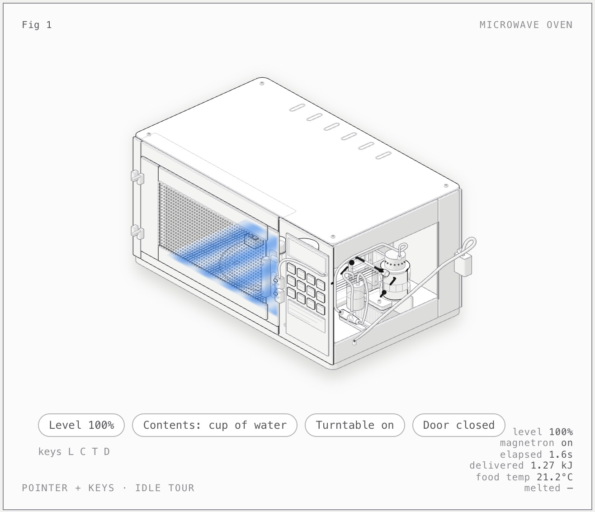

13 October 2026 · Agentic task loop · interactive figure
Microwave Oven Anatomy · Sushi 1.2.2 → 1.2.3
The orchestrator reached COMPLETE after 17 h 20 min of run time in three segments. All 23 tasks are done (22 planned at bootstrap, one added by a replan), the project's verify passes 52 checks in 95 s (limit 240 s), and the final reviewer accepted all 27 requirements. The figure is a detailed microwave cutaway with power levels, contents, turntable and door controls. An independent check found that the frozen block warms 10 times faster than liquid water instead of 10 times slower; the model's own test asserts the inverted behaviour.

What was checked
- Bootstrap was accepted on its first session: 27 requirements, 22 task cards, full requirement coverage and a deterministic verify.
- Each task was accepted only after the orchestrator ran verify --all and verify --task <ID> and a fresh reviewer returned ACCEPT. Reviewers sent T008 and T010 back once; one T023 review left no verdict and was retried.
- verify covers model.mjs behaviour (energy balance, duty cycles, door interlock, melt plateau, ice rate, hot-spot spacing, edge cases), both page builds, headless-Chrome loads without console errors, the skill's geometry audit, the line-end check (0 loose ends on both pages), and dark/light screenshots at 1440 px and 390 px plus one mid-motion frame.
- The final reviewer drove the pages itself: every control by pointer and keys L/C/T/D, the idle tour, the door cutting the energy flow, offscreen pause, reduced motion and no-WebGL, and readouts recomputed by hand from the model.
- Independent check after the run: verify --all passed 52/52 in 95 s; the screenshots are non-blank and show a recognisable oven with a live readout; model.mjs was exercised outside the figure. Water reaches 100 °C in 104.5 s, 50% power gives 15 s on and 15 s off, opening the door stops the energy, and hot spots repeat every 6.1 cm. Deviation: the 10% ice rate is applied to the heat capacity, so a 250 g block warms from -18 °C to 0 °C in 2.35 s; the brief's assumption (10% of the absorbed power) gives about 4 minutes. Melting also absorbs the full 800 W.
Limits of this evidence
Configuration changed mid-run. After the block in T015 the orchestrator gained a hard context stop (1.3 times the budget, then a fresh continuation session) and an operator pause that returns the interrupted attempt; the operator also upgraded Sushi from 1.2.2 to 1.2.3 with unchanged settings. The journal records orchestrator-changed, paused, engine-changed and resumed. The pause record and the engine-change record were written by the operator, because the running orchestrator predated pause support; T015's attempt count was reset by hand from 3 to 1 because neither interrupted attempt had failed verify. The generated project, transcripts and engine logs stay on the workstation.
Configuration
The model, serving engine and agent used for this execution.
| Field | Value | Detail |
|---|---|---|
| Model · primary | Qwen 3.8 Flash Next · primary · reasoning medium | EXL3 2.625 bpw (K=2.625; MCG codebook, window 15), confirmed by the Sushi 1.2.2 and 1.2.3 startup logs |
| Checkpoint · primary | Qwen3.8-Flash-Next-Sushi-2.6bpw | primary model artifact |
| Runtime | Sushi 1.2.2 → 1.2.3 · Sushi 1.2.2 for sessions 001-047 and 1.2.3 for sessions 048-076; OpenAI-compatible server, greedy sampling, MTP drafts, 8-bit KV cache, SSD prefix cache, vision on, /metrics enabled mode | inference engine and exact build |
| Harness | Pi coding agent, driven by the task-loop orchestrator, with the anatomy skill 1.1.0 | the agent or client that drove the run |
| Hardware | Apple MacBook Pro · 64 GB unified memory | hardware recorded for this execution |
| Workload | Microwave Oven Anatomy · revision 1 | Third task-loop orchestrator run and second figure brief: an interactive isometric cutaway of a countertop microwave oven that explains how it heats food, built with the anatomy skill loaded in every session. The orchestrator ran 76 fresh Pi sessions with no human input to the model. The run blocked once on engine memory, was paused once by the operator, and was resumed both times. |
| Context window | 131,072 tokens | maximum context configured for the serving runtime |
| Repetitions | 1 | executions recorded for this workload; one means an indicative result, not an estimate |
Inference measurements
Engine-side rates for this run. Each figure states its own statistic; figures from different runs are not interchangeable.
| Metric | Value | Definition |
|---|---|---|
| TTFT · median | 3.326 s | Median engine-measured TTFT from Sushi /metrics deltas around each response (p90 14.49 s). 3.54 s (p90 15.31 s) on 1.2.2 over 880 responses; 2.96 s (p90 12.37 s) on 1.2.3 over 554. · n=1434 |
| Decode · output-weighted | 41.44 tok/s | Output tokens / engine decode seconds over requests with engine timings (output-weighted). 41.43 on 1.2.2 and 41.46 on 1.2.3. · n=1434 |
| Draft acceptance | 66.03 % | Accepted MTP draft tokens / drafted tokens from Sushi spec-stats over matched requests. 66.76% on 1.2.2 and 64.25% on 1.2.3. · n=1437 · 833462 accepted of 1262150 drafted. |
| Swapped in during the run | 0.35 GiB | Pages swapped in during the run (vm_stat Swapins deltas, 16 KiB pages) over 2106 samples at 30 s and session boundaries. · n=2106 · Kernel memory pressure stayed normal in every sample. Other large applications were closed while the run was active. |
Agent session counters
Agent-wide usage totals. These include reasoning, tool calls and waiting, and are not model decode speed.
| Metric | Value | Definition |
|---|---|---|
| Run elapsed | 1040.3 min | Sum of the three run segments: 11 h 32 min (start to BLOCKED), 7.5 min (resume to the operator's pause) and 5 h 41 min (resume to COMPLETE). Excludes the time the run sat blocked or paused. · n=1 |
| Agent sessions | 76 sessions | Fresh Pi sessions started by the orchestrator: 1 bootstrap, 44 builder, 26 reviewer, 4 replan, 1 final reviewer. Session 047 was cut short by the operator's pause and has no journal record. · n=1 |
| Sessions ended by engine errors | 10 sessions | Sessions that ended with a Sushi 400 error because the prompt needed more GPU memory than was available. Rerun without counting as task attempts. · n=1 · All on Sushi 1.2.2: one in T010, one in T011 and eight in T015. None on 1.2.3, where the new context stop was also active. |
| Sessions stopped by a watchdog | 7 sessions | Sessions stopped by the orchestrator at 1.3 times their context budget and continued by a fresh session, without counting as task attempts (sessions 048 onward). · n=1 |
| Model responses | 1,454 responses | Assistant responses with usage records across all sessions, including 10 engine errors and 7 responses cut by the context stop. · n=1 |
| Matched model requests | 1,437 requests | Successful Pi responses matched in order to Sushi request summaries by prompt total, output tokens and cached (SSD-restored) tokens: 883 in the 1.2.2 process log (PID 97969) and 554 in the 1.2.3 process log (PID 19063). · n=1 · Every successful response matched. Two key tuples repeat because rerun sessions replayed identical first turns under greedy decoding (sessions 044-046 in T015, 060-061 in T017); each repeat appears once per session in the same order, so the ordered assignment is forced. The 1.2.2 log also holds the earlier Prefix Cache Anatomy run and preflight probes, which stay unassigned; the 1.2.3 log holds no other requests. |
| Tool calls | 1,676 calls | Pi tool calls across all recorded sessions. · n=1 |
| Context compactions | 3 compactions | Pi context compactions across all recorded sessions. · n=1 |
Context and token counters
Token totals as reported by the harness or engine. Cached and cumulative figures are not additive with fresh input.
| Metric | Value | Definition |
|---|---|---|
| Maximum prompt context | 110,350 tokens | Largest engine-reported prompt among matched requests (Sushi 1.2.2). The largest on 1.2.3 was 72,144. · n=1437 |
| Fresh input | 5,385,258 tokens | Sum of Pi uncached input counters across all recorded sessions. · n=1 |
| Cached input | 50,562,480 tokens | Sushi cached (SSD-restored) tokens over matched requests (Pi's cache-read counters, which include unmatched responses, sum to 50,519,506). · n=1437 |
| Prompt-cache token share | 90.35 % | Cached input tokens / prompt tokens over matched requests (50,562,480 / 55,963,974). 90.1% on 1.2.2 and 90.8% on 1.2.3. · n=1437 |
| Output tokens | 1,688,432 tokens | Pi output usage across all recorded sessions; includes reasoning tokens. · n=1 |
| of which reasoning output | 1,259,011 tokens | Pi-reported reasoning tokens included in output tokens (74.6%). · n=1 |
Recorded check counters
Counts from the checks recorded with this run.
| Metric | Value | Definition |
|---|---|---|
| Tasks completed | 23 tasks | Task cards with status done at the end; none split, blocked or dropped. · n=1 |
| Reviews returning changes | 2 reviews | Reviewer sessions that returned CHANGES (T008 and T010). · n=1 |
| Project checks passing | 52 checks | Checks passed by the project's own ./verify --all at the end (95 s). · n=1 |
| Hidden acceptance cases passed | 15 checks | Hidden acceptance cases passed, of 16: written from the brief, never shown to the model, and scored the same way for every run. Added after the run. · n=1 · Failed ice.slow-warming: the frozen block warms at 10 times the liquid-water rate instead of 10% of it. |
Request records & provenance
Per-request numbers are not published. All 1,437 successful Pi responses were matched in order to the Sushi process logs (prompt total, output and cached tokens), 883 on 1.2.2 and 554 on 1.2.3. TTFT and decode come from Sushi /metrics counters read before and after each response; 1,434 responses had exactly one finished engine request with token counts equal to Pi's.
Run ID: 2026-10-13-qwen38-flash-next-sushi-v122-v123-pi-task-loop-anatomy-microwave
One execution, with checks transcribed from the retained record. A completed session is not a quality score. Measurement method · All runs